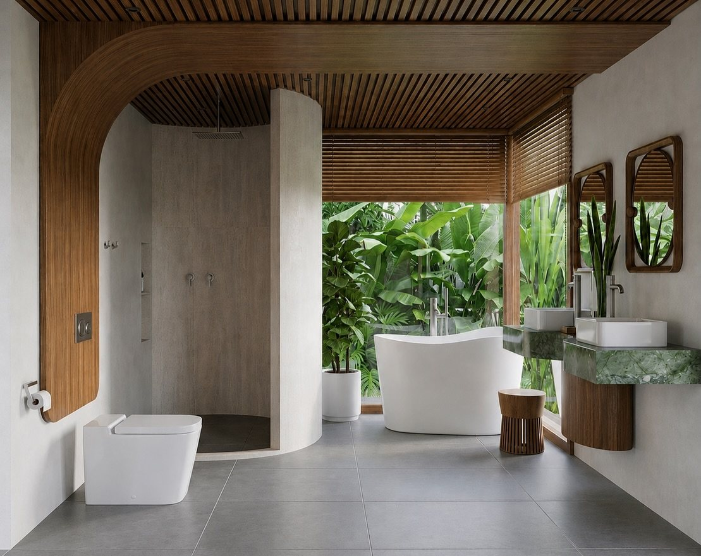
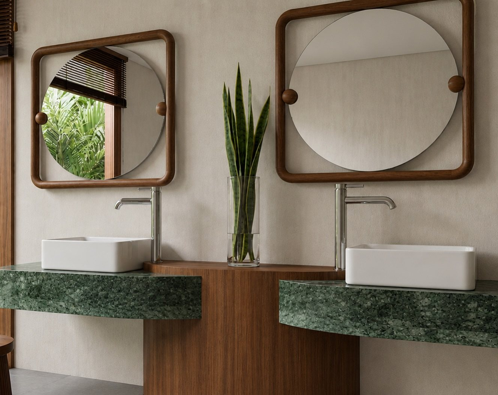

Início · Finalista 2026
Finalista do 8º Prêmio Casa e Jardim, categoria Refúgio por Roca.
Em 2026, a Neri Interiores esteve entre os dez finalistas de uma categoria nacional dedicada a projetos renderizados de banheiros. “Volto pra Salvador com a alegria e orgulho do que fazemos e criamos no escritório.”
Casa e Jardim
O prêmio e a categoria
8º Prêmio Casa e Jardim · 2026 · categoria Refúgio por Roca · entre dez finalistas.
“A categoria Refúgio por Roca é dedicada a projetos renderizados de banheiros […] Entre os dez nomes selecionados […] estão […] Neri Interiores”Viva Decora
O vencedor da categoria foi outro profissional; a Neri Interiores foi finalista.
Banheiro · render
O projeto


Parede curva, banheira solta, jardim ao fundo, bancada de pedra verde com duas cubas e espelhos redondos em moldura de madeira: um banheiro pensado como refúgio.
Legenda
Na voz dela
“Por trás desse projeto existe muito mais do que escolhas, materiais e detalhes. Existe dedicação, coragem para criar e principalmente a vontade de fazer um trabalho que tenha identidade e significado.”Marcela Neri, no Instagram
2026
O evento
“Um grande prazer fazer parte como finalista da premiação na categoria Refúgio por @roca_brasil no prêmio @casaejardim, volto pra Salvador com a alegria e orgulho do que fazemos e criamos no escritório.”Marcela Neri, no Instagram
Transparência
Como conferir
- Lista com os dez finalistas da categoria: Viva Decora.
- Finalistas do prêmio na revista Casa e Jardim.
- Posts da Marcela: finalista e o evento.
Dúvidas frequentes
Perguntas comuns
A Neri Interiores ganhou o prêmio?
Foi finalista: uma das dez selecionadas na categoria Refúgio por Roca. O vencedor da categoria foi outro profissional.
O banheiro foi construído?
A categoria é dedicada a projetos renderizados; as imagens publicadas são render.
Quem organiza o prêmio?
A revista Casa e Jardim. No post dela, a categoria aparece como “Refúgio por @roca_brasil”.
Vamos conversar
Cada projeto começa numa conversa.
Salvador e região, com hora marcada. Conte pelo WhatsApp o que você quer transformar — a Marcela responde para combinar.